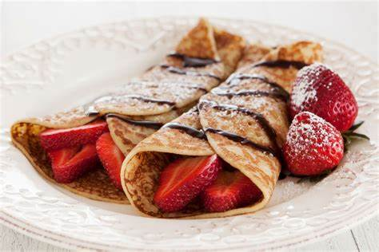

Crepes

Description
A crepe is a thin pancake that tastes slightly of sweet egg that comes from france. Normally enjoyed with a filling (Savory or sweet) and are soft to the bite. Can be enjoyed at any time of day.
Takes around 45min to make 30min chill time 5min prep time 5 min cook time. Very simple yet delish recipes that will make your family want more!
Ingredients
- 2 Cups Milk
- 4 Eggs
- 3 tbsp Melted Butter
- 1 tbsp Sugar
- 1/2 tsp Salt
- 1/2 tbsp Vanilla
- 2 1/2 cups Flour
Instructions
- Start by mixing milk, eggs, butter, sugar, salt, vanilla, and flour in a bowl whisk until batter is smooth
- Next heat a non-stick pan on medium-high heat
- Pour 1/4 cup of batter on pan and immediately rotate pan to cover bottom
- Cook until bubbles form and batter takes a matte tan color
- Flip pancake onto a dish and continue steps 1-4 til batter is gone
- Add topping of choice and Enjoy!